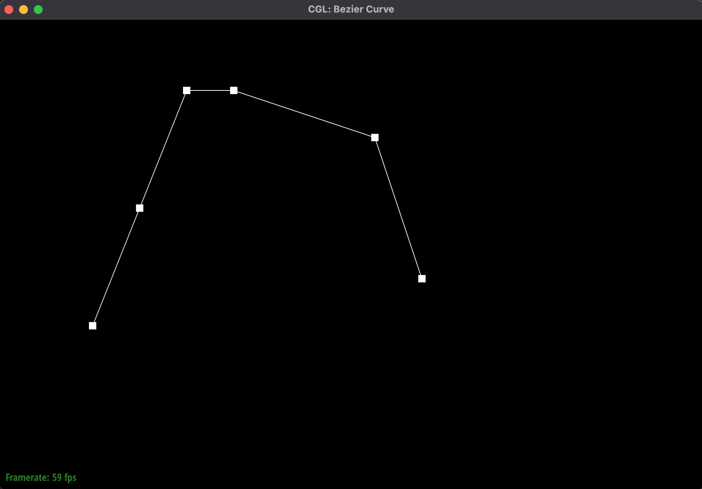
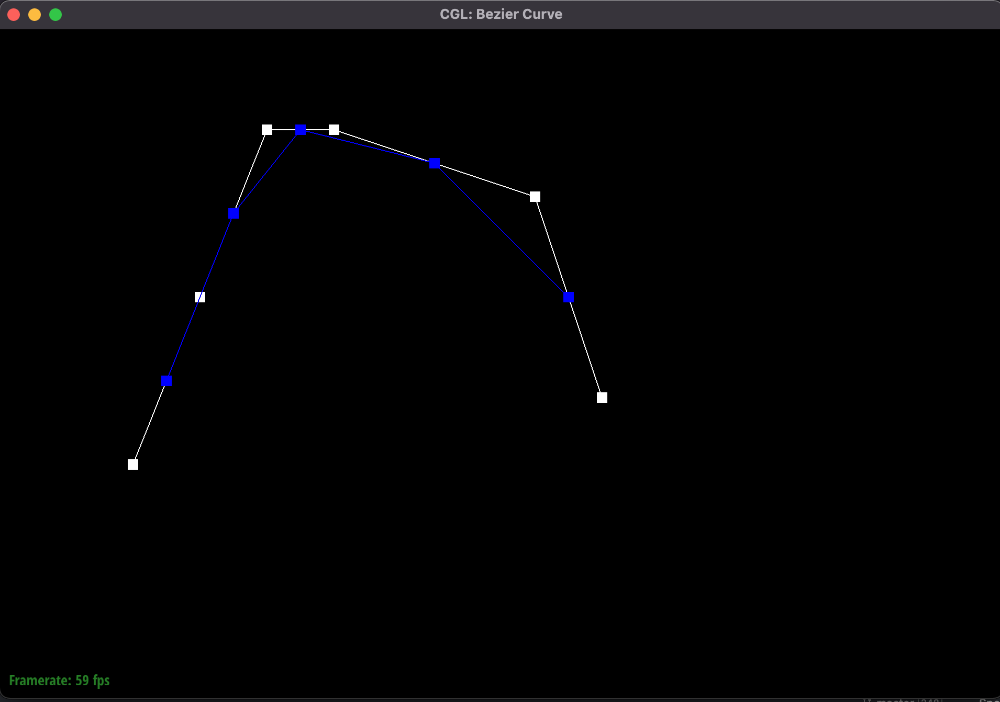
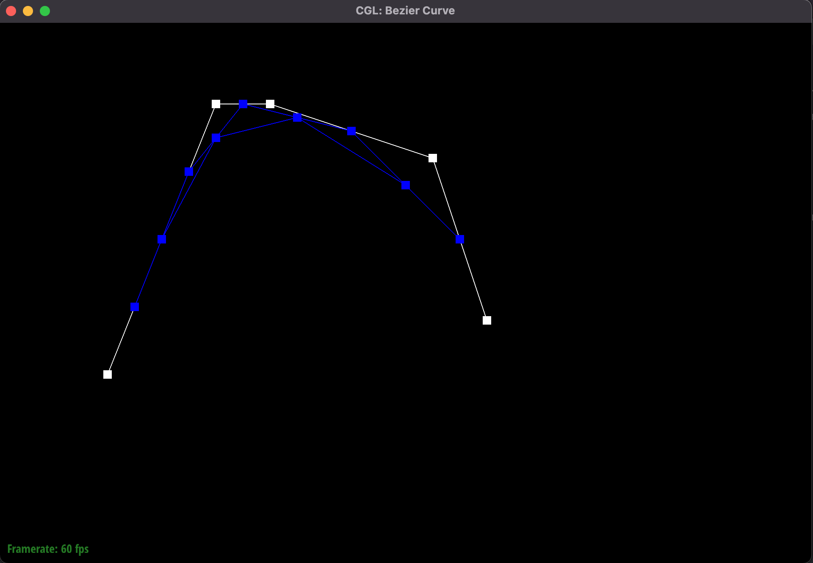
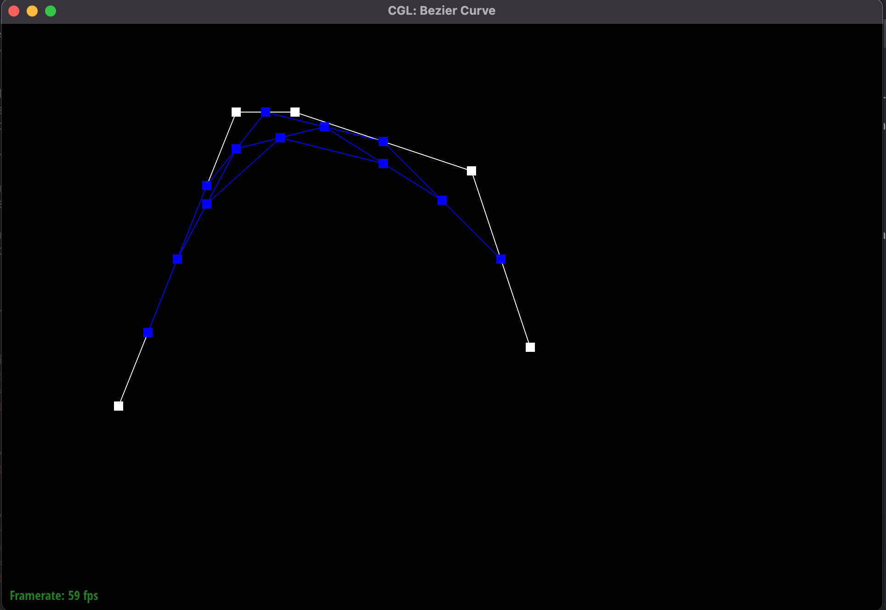
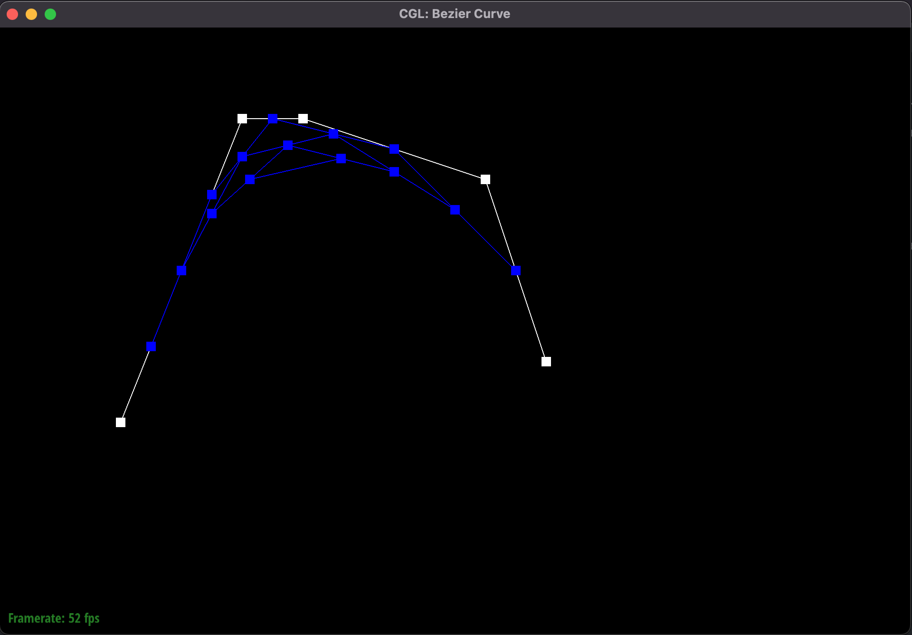
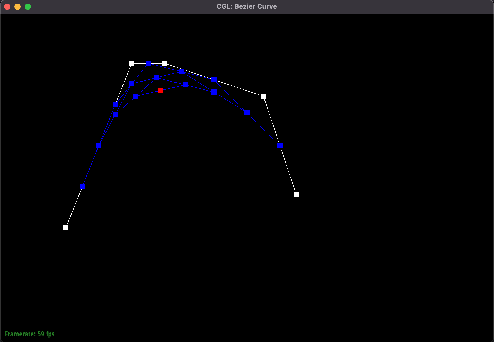
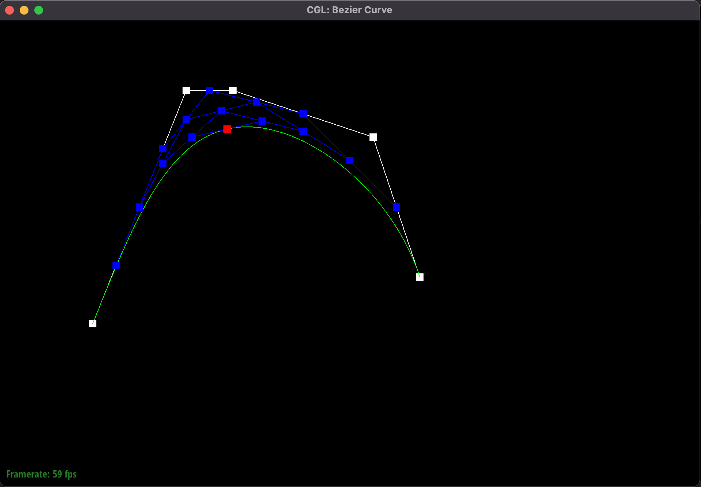
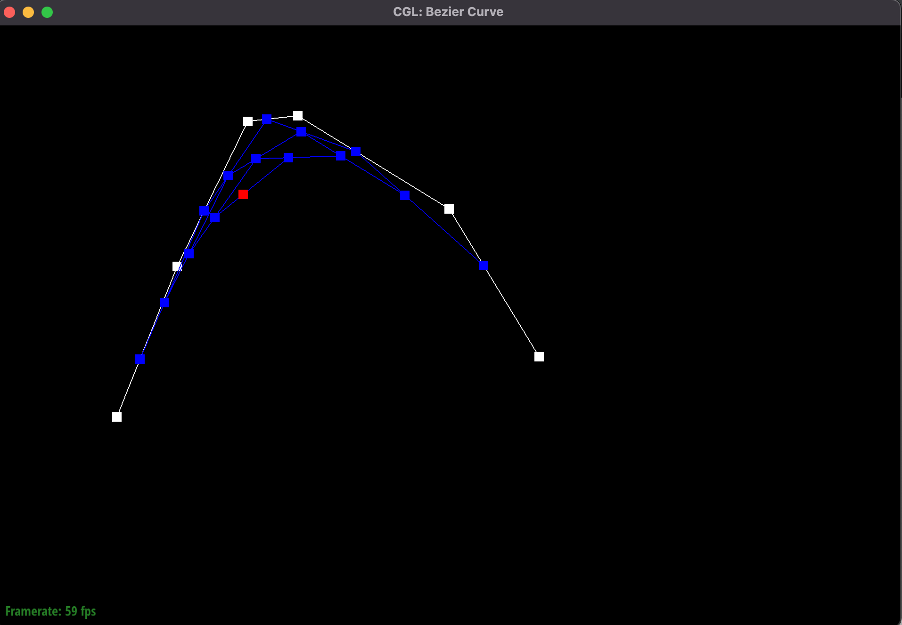

Overview
Give a high-level overview of what you implemented in this project. Think about what you've built as a whole.
Share your thoughts on what interesting things you've learned from completing the project.
Section I: Bezier Curves and Surfaces
Part 1: Bezier curves with 1D de Casteljau subdivision
Briefly explain de Casteljau's algorithm and how you implemented it in order to evaluate Bezier curves.
De Casteljau's algorithm involves interpolating a point between some point p_i and p_{i+1} for i=0...(k-1) when we have k control points. This algorithm is run recursivley until only one point remains and that point will be a point on the Bezier curve with the initial k control points. This was implemented through a series of helper functions such as evaluateStep() which would simply evaluate one step of the recursive de Casteljau's algorithm and evaluate1D() which would evaluate the Bezier curve at some point t given k control points.
Take a look at the provided .bzc files and create your own Bezier curve with 6 control points of your choosing. Use this Bezier curve for your screenshots below.
See figure 1.
Show screenshots of each step / level of the evaluation from the original control points down to the final evaluated point. Press E to step through. Toggle C to show the completed Bezier curve as well.
See figure 2-7.
Show a screenshot of a slightly different Bezier curve by moving the original control points around and modifying the parameter tt via mouse scrolling.
See figure 8.
|

Fig.1: Bezier Curve with 6 control points
|

Fig.2: Bezier Curve after step 1 of de Casteljau's algorithm
|
|

Fig.3: Bezier Curve after step 2 of de Casteljau's algorithm
|

Fig.4: Bezier Curve after step 3 of de Casteljau's algorithm
|
|

Fig.5: Bezier Curve after step 4 of de Casteljau's algorithm
|

Fig.6: Bezier Curve after step 5 of de Casteljau's algorithm
|
|

Fig.7: Bezier Curve after step 5 of de Casteljau's algorithm with superimposed fitting bezier curve.
|

Fig.8: Bezier Curve with 6 control points after step 5 of de Casteljau's algorithm with one control point (last one on right) moved slightly and t paramter changed slightly
|
Part 2: Bezier surfaces with separable 1D de Casteljau subdivision
Briefly explain how de Casteljau algorithm extends to Bezier surfaces and how you implemented it in order to evaluate Bezier surfaces.
De Casteljau's algorithm extends very well/easily to Bezier surfaces by simply performing 1d de casteljau's algorithm to each row of a bezier curve's rows in the control matrix.
Show a screenshot of bez/teapot.bez (not .dae) evaluated by your implementation
INSERT STUFF
Section II: Sampling
Part 3: Average normals for half-edge meshes
Part 4: Half-edge flip
Part 5: Half-edge split
Part 6: Loop subdivision for mesh upsampling
Section III: Optional Extra Credit
If you are not participating in the optional mesh competition, don't worry about this section!
Part 7: Design your own mesh!